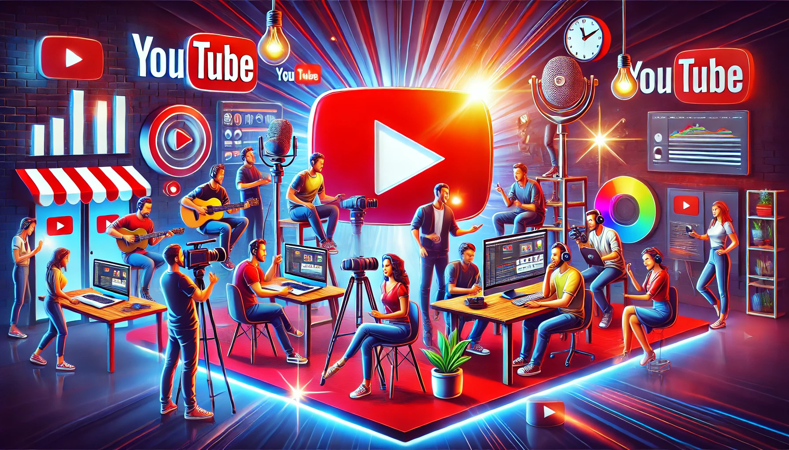

YouTube
Why YouTube?
YouTube is more than just a video-sharing platform—it's a gateway to endless opportunities. Whether you're passionate about sharing knowledge, showcasing your creativity, or building a personal brand, YouTube offers the perfect platform to reach a global audience. Here’s why you should start today:
How to start a youtube channel?
How to Setup your channel?
Designing Thumbnails: The Key to Grabbing Attention
Thumbnails are the first thing viewers notice when browsing YouTube. A well-designed thumbnail can dramatically increase your video's click-through rate. Here’s how to create engaging thumbnails: